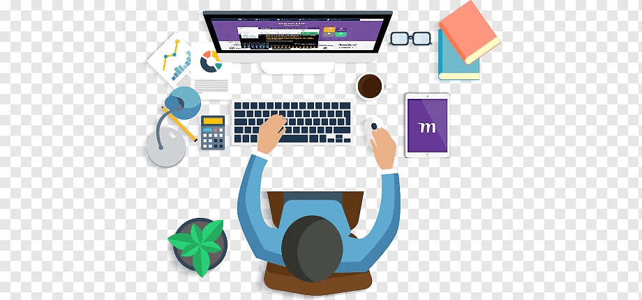
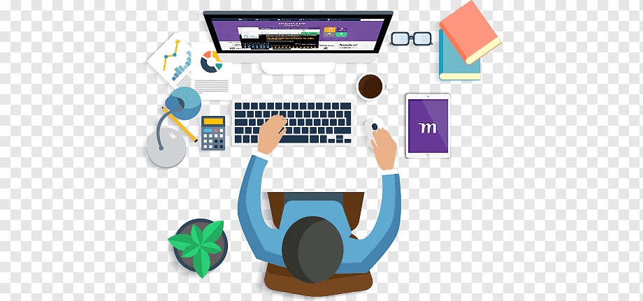

E-commerce
El comercio electrónico ha permitido a las empresas alcanzar un mercado global sin necesidad de una presencia física.
La tecnología web ha transformado el mundo de los negocios de muchas maneras, incluyendo:
El comercio electrónico ha permitido a las empresas alcanzar un mercado global sin necesidad de una presencia física.
Las estrategias de marketing digital permiten una segmentación y personalización sin precedentes.

| Beneficio | Descripción |
|---|---|
| Segmentación | Permite enfocar esfuerzos en un público específico. |
| Medición | Facilita el análisis del rendimiento de las campañas. |